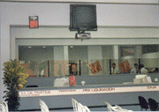

| Oficina Registral de Lima y Callao |
|  Para la realización de los trámites, Registros Públicos de Lima y Callao pone a disposición de los usuarios las siguientes sedes:
Además, la Oficina Registral Loreto cuenta con una unidad receptora en la ciudad de Nauta. Reseña Historica de los Registros de Lima y Callao Posteriormente a la creación de este Registro, se han ido aperturando diferentes registros jurídicos, como el Registro Mercantil, el Registro de Testamentos, el Registro de Declaratoria de Herederos, entre otros. Finalmente, en octubre de 1994, con la creación del Sistema Nacional de los Registros Públicos y de la Superintendencia Nacional, Registros Públicos de Lima y Callao se establece como un órgano desconcentrado, que cuenta con autonomía registral, económica y administrativa.
|
|